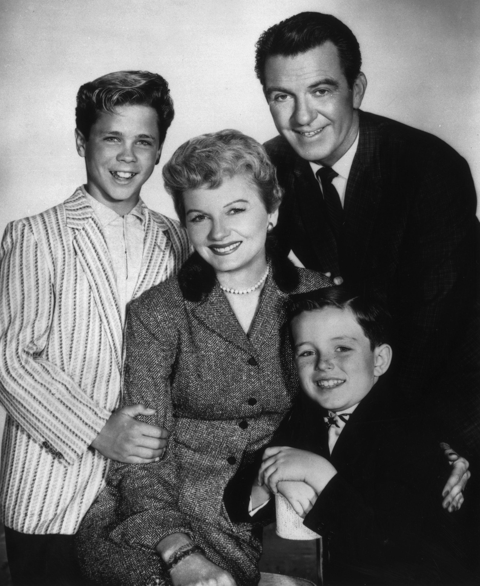
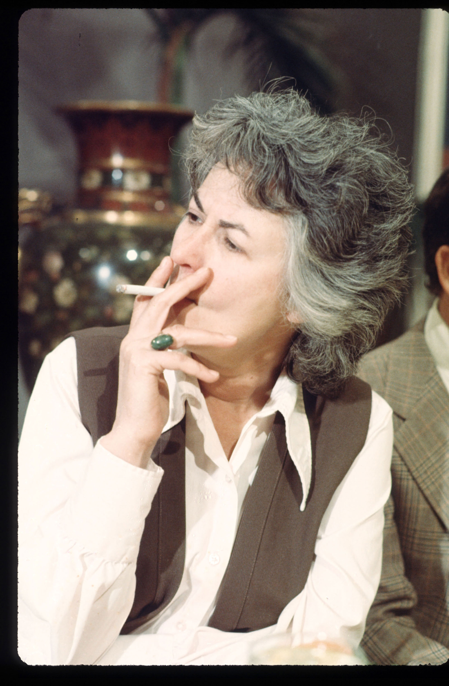

Since its inception as an integral part of American life in the 1950s, television has both reflected and nurtured cultural mores and values. From the escapist dramas of the 1960s, which consciously avoided controversial issues and glossed over life’s harsher realities in favor of an idealized portrayal, to the copious reality television shows in recent years, on which participants discuss even the most personal and taboo issues, television has held up a mirror to society. But the relationship between social attitudes and television is reciprocal; broadcasters have often demonstrated their power to influence viewers, either consciously through slanted political commentary, or subtly, by portraying controversial relationships (such as single parenthood, same-sex marriages, or interracial couplings) as socially acceptable. The symbiotic nature of television and culture is exemplified in every broadcast, from family sitcoms to serious news reports.
In the 1950s, most television entertainment programs ignored current events and political issues. Instead, the three major networks (ABC, NBC, and CBS) developed prime-time shows that would appeal to a general family audience. Chief among these types of shows was the domestic comedyGeneric family comedy popular in the 1950s that was identified by its character-based humor and was usually set within the home.—a generic family comedy that was identified by its character-based humor and usually set within the home. Seminal examples included popular 1950s shows such as Leave It to Beaver, The Donna Reed Show, and The Adventures of Ozzie and Harriet. Presenting a standardized version of the white middle-class suburban family, domestic comedies portrayed the conservative values of an idealized American life. Studiously avoiding prevalent social issues such as racial discrimination and civil rights, the shows focused on mostly white middle-class families with traditional nuclear roles (mother in the home, father in the office) and implied that most domestic problems could be solved within a 30-minute time slot, always ending with a strong moral lesson.
Although these shows depicted an idealized version of American family life, many families in the 1950s were traditional nuclear families. Following the widespread poverty, political uncertainty, and physical separation of the war years, many Americans wanted to settle down, have children, and enjoy the peace and security that family life appeared to offer. During the booming postwar era, a period of optimism and prosperity, the traditional nuclear family flourished. However, the families and lifestyles presented in domestic comedies did not encompass the overall American experience by any stretch of the imagination. As historian Stephanie Coontz points out, “the June Cleaver or Donna Stone homemaker role was not available to the more than 40 percent of black women with small children who worked outside the home.”Stephanie Coontz, “‘Leave It to Beaver’ and ‘Ozzie and Harriet’: American Families in the 1950s,” in The Way We Never Were: American Families and the Nostalgia Trip (New York: BasicBooks, 1992), 28. Although nearly 60 percent of the U.S. population was labeled middle class by the mid-1950s, 25 percent of all families and more than 50 percent of two-parent black families were poor. Migrant workers suffered horrific deprivations, and racial tensions were rife. None of this was reflected in the world of domestic comedies, where even the Hispanic gardener in Father Knows Best was named Frank Smith.Stephanie Coontz, “‘Leave It to Beaver’ and ‘Ozzie and Harriet’: American Families in the 1950s,” in The Way We Never Were: American Families and the Nostalgia Trip (New York: BasicBooks, 1992), 28.
Figure 9.8
Most domestic comedies in the 1950s portrayed an idealized version of family life and ignored social and political events.
Not all programs in the 1950s were afraid to tackle controversial social or political issues. In March 1954, journalist Edward R. Murrow broadcast an unflattering portrait of U.S. Senator Joseph McCarthy on his show See It Now. McCarthy, a member of the Senate Investigation Committee, had launched inquiries regarding potential Communist infiltration in U.S. institutions. Murrow thought that McCarthy’s aggressive tactics were a potential threat to civil liberties. His portrait cast the senator from Wisconsin in an unflattering light by pointing out contradictions in his speeches. This led to such an uproar that McCarthy was formally reprimanded by the U.S. Senate.Michael J. Friedman, “‘See It Now’: Murrow vs. McCarthy,” in Edward R. Murrow: Journalism at Its Best, publication of U.S. Department of State, June 1, 2008, http://www.america.gov/st/democracyhr-english/2008/June/20080601110244eaifas8.602542e-02.html.
Entertainment programs also tackled controversial issues. The long-running television western Gunsmoke, which aired on CBS from 1955 to 1975, flourished in a Cold War society, where U.S. Marshal Matt Dillon (James Arness) stood up to lawlessness in defense of civilization. The characters and community in Gunsmoke faced relevant social issues, including the treatment of minority groups, the meaning of family, the legitimacy of violence, and the strength of religious belief. During the 1960s, the show adapted to the desires of its viewing audience, becoming increasingly aware of and sympathetic to ethnic minorities, in tune with the national mood during the civil rights era. This adaptability helped the show to become the longest-running western in television history.
During the 1960s, television news broadcasts brought the realities of real-world events into people’s living rooms in vivid detail. The CBS Evening News with Walter Cronkite, which debuted in 1962, quickly became the country’s most popular newscast, and by the end of the decade, journalist Walter Cronkite was known as the most trusted man in America. Following John F. Kennedy’s election to the presidency at the beginning of the decade, the 1960s took an ominous turn. Shocked viewers tuned into Cronkite’s broadcast on November 22, 1963, to learn about the assassination of their president. During the next few days, viewers followed every aspect of the tragedy on television, from the tremor in Cronkite’s voice as he removed his glasses and announced the news of Kennedy’s death, to the frantic scenes from Dallas police headquarters where the assassin, Lee Harvery Oswald, was gunned down by nightclub owner Jack Ruby, to the thousands of mourners lining up next to the president’s flag-draped coffin.
Figure 9.9

Television began to play a major role in U.S. politics during the presidency of John. F. Kennedy.
Around the same time as Kennedy’s assassination, horrific images from Vietnam were streaming into people’s living rooms during the nation’s first televised war. With five camera crews on duty in the Saigon bureau, news crews captured vivid details of the war in progress. Although graphic images were rarely shown on network television, several instances of violence reached the screen, including a CBS report in 1965 that showed Marines lighting the thatched roofs of the village of Cam Ne with Zippo lighters and an NBC news report in 1968 that aired a shot of South Vietnamese General Nyuyen Ngoc Loan executing a captive on a Saigon street. Further images, of children being burned and scarred by napalm and prisoners being tortured, fueled the antiwar sentiments of many Americans. In addition to the devastation caused by the president’s death and the Vietnam War, Americans were also feeling the pressure of the Cold War—the clash between the United States and the Soviet Union in the years following World War II. This pressure was especially great during periods of tension throughout the 1950s and 1960s, such as the 1962 Cuban Missile Crisis, a confrontation that caused many people to fear nuclear war.
As a result of the intense stress faced by many Americans during the 1960s, broadcasters and viewers turned to escapist programs such as I Dream of Jeannie, a fantasy show about a 2,000-year-old genie who marries an astronaut, and Bewitched, a supernatural-themed show about a witch who tries to live as a surburban housewife. Both shows typified the situation comedyComedy genre, also known as a sitcom, that features a recurring cast of characters who resolve zany situations based on their everyday lives., or sitcom, a comedy genre featuring a recurring cast of characters who resolve zany situations based on their everyday lives. Other popular sitcoms in the 1960s included The Beverly Hillbillies, a show about a poor backwoods family who move to Beverly Hills, California, after finding oil on their land, and Gilligan’s Island, the ultimate escapist comedy about seven characters shipwrecked on an uncharted island. None of the 1960s sitcoms mentioned any of the political unease that was taking place in the outside world, providing audiences with a welcome diversion from real life. Other than an occasional documentary, television programming in the 1960s consisted of a sharp dichotomy between prime-time escapist comedy and hard news.
Figure 9.10

Escapist sitcoms like I Dream of Jeannie provided Americans with a much-needed diversion from the stressful events of the 1960s.
During the 1970s, broadcasters began to diversify families on their shows to reflect changing social attitudes toward formerly controversial issues such as single parenthood and divorce. Feminist groups including the National Organization for Women (NOW), the National Women’s Political Caucus, and the Coalition of Labor Union Women pushed for equality on issues such as pay and encouraged women to enter the workforce. In 1972, the U.S. Supreme Court sanctioned women’s right to abortion, giving them control over their reproductive rights. Divorce rates skyrocketed during the 1970s, as states adopted no-fault divorce laws, and the change in family dynamics was reflected on television. Between 1972 and 1978, CBS aired the socially controversial sitcom Maude. Featuring a middle-aged feminist living with her fourth husband and divorced daughter, the show exploded the dominant values of the white middle-class domestic sitcom and its traditional gender roles. Throughout its 7-year run, Maude tackled social and political issues such as abortion, menopause, birth control, alcoholism, and depression. During its first four seasons, the show was in the top 10 in Nielsen ratings, illustrating the changing tastes of the viewing audience, who had come of age during the era of civil rights and Vietnam protests and developed a taste for socially conscious television. Other 1970s sitcoms took the same approach, including Maude’s CBS predecessor, All in the Family, which covered issues ranging from racism and homophobia to rape and miscarriage, and The Mary Tyler Moore Show, which reflected changing attitudes toward women’s rights by featuring television’s first never-married independent career woman as the central character. Even wholesome family favorite The Brady Bunch, which ran from 1969 to 1974, featured a non-nuclear family, reflecting the rising rates of blended families in American society.
Figure 9.11
The popularity of controversial shows like Maude reflected the changing cultural and social values of the 1970s.
In addition to changing family dynamics on sitcoms and other prime-time shows, variety and comedy sketch shows developed a political awareness in the 1970s that reflected audiences’ growing appetite for social and political commentary. Sketch comedyA series of short comedy scenes or vignettes that are often featured on variety shows, talk shows, or comedy shows. During the 1970s, comedy sketches that parodied American popular culture and politics grew in popularity. show Saturday Night Live (SNL) premiered on NBC in 1975 and has remained on air ever since. Featuring a different celebrity guest host every week and relatively unknown comedy regulars, the show parodies contemporary popular culture and politics, lambasting presidential candidates and pop stars alike. Earlier NBC sketch comedy show Laugh-In, which ran from 1968 to 1973, also featured politically charged material, though it lacked the satirical bite of later series such as SNL. By the end of the decade, television broadcasting reflected a far more politically conscious and socially aware viewing audience.
Until the mid-1980s, the top three networks (ABC, NBC, and CBS) dominated television broadcasting in the United States. However, as cable services gained popularity following the deregulation of the industry in 1984, viewers found themselves with a multitude of options. Services such as Cable News Network (CNN), Entertainment and Sports Programming Network (ESPN), and Music Television (MTV) profoundly altered the television landscape in the world of news, sports, and music. New markets opened up for these innovative program types, as well as for older genres such as the sitcom. During the 1980s, a revival of family sitcoms took place with two enormous hits: The Cosby Show and Family Ties. Both featured a new take on modern family life, with the mothers working outside of the home and the fathers pitching in with housework and parental duties. Despite their success on network television, sitcoms faced stiff competition from cable’s variety of choices. Between 1983 and 1994, weekly broadcast audience shares (a measure of the number of televisions in use that are tuned to a particular show) for network television dropped from 69 to 52, while cable networks’ shares rose from 9 to 26.Horace Newcomb, ed., Encyclopedia of Television (New York: Fitzroy Dearborn, 2004), 389.
With a growing number of households subscribing to cable television, concern began to grow about the levels of violence to which children were becoming exposed. In addition to regularly broadcast network programs, cable offered viewers the chance to watch films and adult-themed shows during all hours, many of which had far more violent content than normal network programming. One study found that by the time an average child leaves elementary school, he or she has witnessed 8,000 murders and more than 100,000 other acts of violence on television.Rea Blakey, “Study Links TV Viewing Among Kids to Later Violence,” CNN Health, March 28, 2002, http://archives.cnn.com/2002/HEALTH/parenting/03/28/kids.tv.violence/index.html. Although no conclusive links have been drawn between witnessing violence on television and carrying out violence in real life, the loosening boundaries regarding sexual and violent content on television is a persistent cause for concern for many parents. For more information on the social effects of violence in the media, please refer to Chapter 2 "Media Effects".
Although television viewership is growing, the vast number of cable channels and other, newer content delivery platforms means that audiences are thinly stretched. In recent years, broadcasters have been narrowing the focus of their programming to meet the needs and interests of an increasingly fragmented audience. Entire cable channels devoted to cooking, music, news, African American interests (see sidebar below), weather, and courtroom drama enable viewers to choose exactly what type of show they want to watch, and many news channels are further specialized according to viewers’ political opinions. This trend toward specialization reflects a more general shift within society, as companies cater increasingly to smaller, more targeted consumer bases. Business magazine editor Chris Anderson explains, “We’re leaving the watercooler era, when most of us listened, watched and read from the same relatively small pool of mostly hit content. And we’re entering the microculture era, when we are all into different things.”Marc Gunther, “The Extinction of Mass Culture, CNN Money, July 12, 2006, http://money.cnn.com/2006/07/11/news/economy/pluggedin_gunther.fortune/index.htm. Just as cable broadcasters are catering to niche markets, Internet-based companies such as Amazon.com and Netflix are taking advantage of this concept by selling large numbers of books, DVDs, and music albums with narrow appeal. Section 9.3 "Issues and Trends in the Television Industry" and Section 9.4 "Influence of New Technologies" of this chapter will cover the recent trends and issues of this era in television.
Launched in 1980, Black Entertainment Television (BET) was the first television network in the United States dedicated to the interests of African American viewers. The basic-cable franchise was created in Washington, DC, by media entrepreneur Robert Johnson, who initially invested $15,000 in the venture. Within a decade, he had turned the company into a multimillion-dollar enterprise, and in 1991 it became the first black-controlled company on the New York Stock Exchange. The company was sold to Viacom in 2003 for $3 billion.
Predating MTV by a year, BET initially focused on black-oriented music videos but soon diversified into original urban-oriented programs and public affairs shows. Although BET compensated somewhat for the underrepresentation of blacks on television (African Americans made up 8 percent of the prime-time characters on television in 1980 but made up 12 percent of the population), viewers complained about the portrayal of stereotypical images and inappropriate violent or sexual behavior in many of the rap videos shown by the network. In a 2004 interview with BET vice president of communications Michael Lewellen, former BET talk show host Bev Smith said, “We had videos on BET in those days that were graphic but didn’t proliferate as they seem to be doing now. That’s all you do seem to see are scantily dressed women who a lot of African American women are upset about in those videos.”The O’Reilly Factor, “Is Black Entertainment Television Taking a Disturbing Turn?” Fox News, May 26, 2004, http://www.foxnews.com/story/0,2933,120993,00.html. Despite the criticisms, BET remained the No. 1 cable network among blacks 18 to 34 in 2010 and retained an average audience of 524,000 total viewers during the first quarter of the year.Forbes, “BET Networks Unveils New African American Consumer Market Research and New Programming at 2010 Upfront Presentation,” April 14, 2010, http://www.forbes.com/feeds/prnewswire/2010/04/14/prnewswire201004141601PR_NEWS_USPR_____NE86679.html.
Despite entering a microculture era with a variety of niche markets, television remains the most important unifying cultural presence in the United States. During times of national crises, television news broadcasts have galvanized the country by providing real-time coverage of major events. When terrorists crashed planes into the World Trade Center towers in 2001, 24-hour television news crews provided stunned viewers around the world with continuous updates about the attack and its aftermath. Meanwhile, network blockbusters such as Lost and 24 have united viewers in shared anticipation, launching numerous blogs, fan sites, and speculative workplace discussions about characters’ fates.
Televised coverage of the news has had several cultural effects since the 1950s. Providing viewers with footage of the most intense human experiences, televised news has been able to reach people in a way that radio and newspapers cannot. The images themselves have played an important role in influencing viewer opinion. During the coverage of the civil rights movement, for example, footage of a 1963 attack on civil rights protesters in Birmingham, Alabama, showed police blasting African American demonstrators—many of them children—with fire hoses. Coupled with images of angry white segregationist mobs squaring off against black students, the news footage did much to sway public opinion in favor of liberal legislation such as the 1964 Voting Rights Act. Conversely, when volatile pictures of the race riots in Detroit and other cities in the late 1960s hit the airwaves, horrified viewers saw the need for a return to law and order. The footage helped create an anti-civil-rights backlash that encouraged many viewers to vote for conservative Republican Richard Nixon during the 1968 presidential election.
During the past few decades, mass-media news coverage has gone beyond swaying public opinion through mere imagery. Trusted centrist voices such as that of Walter Cronkite, who was known for his impartial reporting of some of the biggest news stories in the 1960s, have been replaced by highly politicized news coverage on cable channels such as conservative Fox News and liberal MSNBC. As broadcasters narrow their focus to cater to more specialized audiences, viewers choose to watch the networks that suit their political bias. Middle-of-the-road network CNN, which aims for nonpartisanship, frequently loses out in the ratings wars against Fox and MSNBC, both of which have fierce groups of supporters. As one reporter put it, “A small partisan base is enough for big ratings; the mildly interested middle might rather watch Grey’s Anatomy.”James Poniewozik, “CNN: Can a Mainstream News Outlet Survive?” Time, May 3, 2010, http://www.time.com/time/magazine/article/0,9171,1983901,00.html. Critics argue that partisan news networksNews networks that cater to niche political audiences by offering a right-wing or left-wing viewpoint rather than attempting to remain impartial. cause viewers to have less understanding of opposing political opinions, making them more polarized.
Table 9.1 Partisan Profile of Television News Audiences 2008
News Channel |
Republican (%) |
Democratic (%) |
Independent (%) |
|---|---|---|---|
Fox News |
39 |
33 |
22 |
Nightly Network |
22 |
45 |
26 |
MSNBC |
18 |
45 |
27 |
CNN |
18 |
51 |
23 |
NewsHour |
21 |
46 |
23 |
Source: “Partisanship and Cable News Audiences,” Oct. 30, 2009, Pew Research Center for the People & the Press, a project of the Pew Research Center.
The issue of whether television producers have a responsibility to promote particular social values continues to generate heated discussion. When the unmarried title character in the CBS series Murphy Brown—a comedy show about a divorced anchorwoman—got pregnant and chose to have the baby without any involvement from the father, then–Vice President Dan Quayle referenced the show as an example of degenerating family values. Linking the 1992 Los Angeles riots to a breakdown of family structure and social order, Quayle lambasted producers’ poor judgment, saying, “It doesn’t help matters when prime-time TV has Murphy Brown, a character who supposedly epitomizes today’s intelligent, highly paid professional woman, mocking the importance of fathers by bearing a child alone, and calling it just another ‘lifestyle choice.’”Time, “Dan Quayle vs. Murphy Brown,” June 1, 1992, http://www.time.com/time/magazine/article/0,9171,975627,00.html. Quayle’s outburst sparked lively debate between supporters and opponents of his viewpoint, with some praising his outspoken social commentary and others dismissing him as out of touch with America and its growing number of single mothers.
Similar controversy arose with the portrayal of openly gay characters on prime-time television shows. When the lead character on the ABC sitcom Ellen came out in 1997 (2 weeks after Ellen DeGeneres, the actress who played the role, announced that she was gay), she became the first leading gay character on both broadcast and cable networks. The show proved to be a test case for the nation’s tolerance of openly gay characters on prime-time television and became the subject of much debate. Embraced by liberal supporters and lambasted by conservative objectors (evangelical Baptist minister Jerry Falwell infamously dubbed her “Ellen DeGenerate”), both the actress and the show furthered the quest to make homosexuality acceptable to mainstream audiences. Although Ellen was canceled the following year (amid disagreements with producers about whether it should contain a parental advisory warning), DeGeneres successfully returned to television in 2003 with her own talk show. Subsequent shows with prominent gay characters were quick to follow in Ellen’s footsteps. According to the Gay & Lesbian Alliance Against Defamation (GLAAD), 18 lesbian, gay, bisexual, or transgender characters accounted for 3 percent of scripted series regulars in the 2009–2010 broadcast television schedule, up from 1.3 percent in 2006.Wendy Mitchell, “GLAAD Report: Gay Characters on Network TV Still on the Rise,” Entertainment Weekly, September 30, 2009, http://hollywoodinsider.ew.com/2009/09/30/glaad-report-gay-characters-on-rise/.
Emerging out of the 1948 television series Candid Camera, in which people were secretly filmed responding to elaborate practical jokes, reality televisionTelevision that attempts to capture unscripted, real-life situations. Many reality television shows are contrived or deliberately manufactured by producers. aimed to capture real, unscripted life on camera. The genre developed in several different directions, from home-video clip shows (America’s Funniest Home Videos, America’s Funniest People) to true-crime reenactment shows (America’s Most Wanted, Unsolved Mysteries) to thematic shows based on professions of interest (Project Runway, Police Women of Broward County, Top Chef). Near the turn of the millennium, the genre began to lean toward more voyeuristic shows, such as MTV’s The Real World, an unscripted “documentary” that followed the lives of seven strangers selected to live together in a large house or apartment in a major city. The show drew criticisms for glamorizing bad behavior and encouraging excessive drinking and casual sex, although its ratings soared with each successive controversy (a trend that critics claim encouraged producers to actively stage rating-grabbing scenarios). During the late 1990s and 2000s, a wave of copycat reality television shows emerged, including the voyeuristic series Big Brother, which filmed a group of strangers living together in an isolated house full of cameras in an attempt to win large amounts of cash, and Survivor, a game show in which participants competed against each other by performing endurance challenges on an uninhabited island. Survivor’s success as the most popular show on television in the summer of 2000 ensured the continued growth of the reality television genre, and producers turned their attention to reality dating shows such as The Bachelor, Temptation Island, and Dating in the Dark. Cheap to produce, with a seemingly never-ending supply of willing contestants and eager advertising sponsors, reality television shows continue to bring in big ratings. As of 2010, singing talent competition American Idol is television’s biggest revenue generator, pulling in $8.1 million in advertising sales every 30 minutes it is on the air.Paul Bond, “‘Idol’ Listed as TV’s Biggest Revenue Generator,” Hollywood Reporter, May 5, 2010, http://www.hollywoodreporter.com/hr/content_display/news/e3i8f1f42046a622bda2d602430b16d3ed9.
Figure 9.12

The stress of appearing on reality television shows has proved detrimental to some contestants’ health. Britain’s Got Talent star Susan Boyle suffered a nervous breakdown in 2009.
Reality television has created the cultural phenomenon of the instant celebrity. Famous for simply being on the air, reality show contestants are extending their 15 minutes in the spotlight. Kate Gosselin, star of Jon & Kate Plus 8, a cable television show about a couple who have eight children, has since appeared in numerous magazine articles, and in 2010 she starred on celebrity reality dance show Dancing with the Stars. Survivor contestant Elisabeth Hasselbeck became a co-host on television talk show The View, and several American Idol contestants (including Kelly Clarkson and Carrie Underwood) have become household names. The genre has drawn criticism for creating a generation that expects to achieve instant wealth without having to try very hard and also for preying on vulnerable people whom critics call “disposable.” When Britain’s Got Talent star Susan Boyle suffered a public meltdown in 2009 after the stress of transitioning from obscurity to stardom in an extremely short time period, the media began to point out the dangers of reality television. In 2009, TheWrap.com investigated the current lives of former stars of reality shows such as The Contender, Paradise Hotel, Wife Swap, and Extreme Makeover and found that at least 11 participants had committed suicide as an apparent result of their appearances on screen.Guy Adams, “Lessons From America on the Dangers of Reality Television,” Independent (London), June 6, 2009, http://www.independent.co.uk/news/world/americas/lessons-from-america-on-the-dangers-of-reality-television-1698165.html; Frank Feldlinger, “TheWrap Investigates: 11 Players Have Committed Suicide,” TheWrap, http://www.thewrap.com/television/article/thewrap-investigates-11-players-have-committed-suicide-3409.
Please respond to the following short-answer writing prompts. Each response should be a minimum of one paragraph.